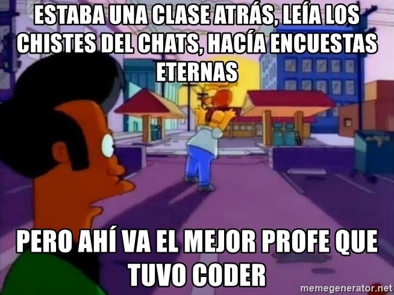
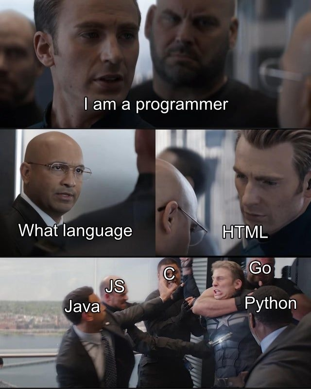
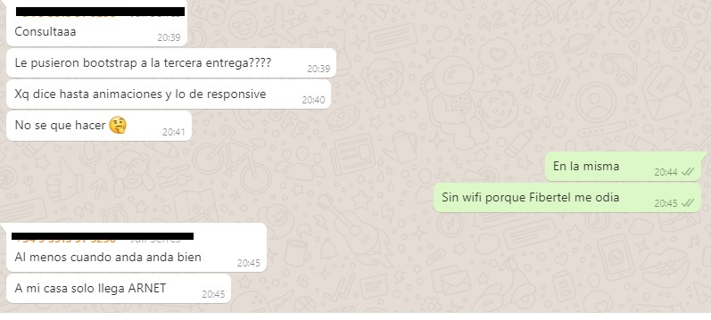
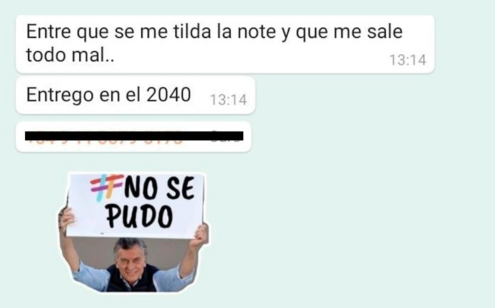

El final del curso

Llegamos al final del curso, muchos quemados y fundidos. El grupo de WhatsApp es un golazo: nos pasamos tips de desarrollo, memes, stickers y recetas de cocina.
También ahogamos nuestras penas.
Team Berni
Hay un debate interno sobre Berni: su demora no implica que después tengamos que correr con las entregas, explica bien, tranqui, lee lo que preguntamos.
Cada tanto tira un chiste, aunque no es su fuerte.
No está ni cerca de ser su fuerte el humor, pero soy #TeamBerni.
Nunca me di cuenta, pero quedaron dos grupos de WhatsApp de alumnos.
Se me pasó, pero cuando hicimos el grupo una tutora se unió también. Cuando llegaron los dardos por un par de situaciones que se dieron salió corriendo.
Guardaré su identidad bajo 4 llaves.
También guardaré la identidad de la tutora que me ayudó durante todo el curso (no fue la que me asignaron en un principio. Una pena.
El grupo mejora notablemente cuando nos mandamos fotos de comidas, birras, etc.
También hay tiempo para chistes nerds que tal vez hace unos meses no hubiéramos entendido.
Te amo, Fibertel, no volvamos a pelear
Fibertel me volvió a dejar sin WiFi, pero pasó algo extraordinario: vinieron al día siguiente. Punto para Fibertel.
Me tiraron el cuento ese que es un tema de la caja y que tenía que venir otra cuadrilla a solucionarlo. Vinieron el mismo día. Punto para Fibertel.
Bajaron un nuevo cableado y el servicio vuela. "Cuando anda, anda bien".
Ganador por KO, Fibertel.
Pondría un link para que contraten el servicio, pero tal vez lo toman como una provocación y me dejan sin WiFi de nuevo.
El tramo final
Llegan las últimas semanas del curso, las últimas entregas y los famosos desafíos.
Hay un tema no menor: no es fácil seguir el ritmo si no vas a los after.Es un bajón para los que ya estamos insertados en el mercado laboral, pero es así.
Algunos están muy preocupados por las entregas, inquietud que comparto.